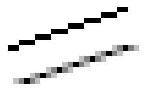

The library have partial support for the use of anti-aliasing when crating graphs. The level of support is different depending on the actual graph type and there are some caveats to be aware of.
One question that is often asked is why does the library not support full anti-aliasing in every type of graphs? The answer is that since neither GD graphic library does not support real anti-aliasing this is done in the library itself most of the time. Doing full image anti-aliasing is very CPU intensive and can for large graph easily take four times longer than no anti-aliasing. In addition the way full image anti-aliasing is done is by creating larger canvas which the graph is drawn on and then do a smoothing operation, basically scale the image to the correct size puts some limitation on the details resolution. For example text needs special handling since the TTF fonts are already anti-aliased and cannot be re-anti-aliased a second time.
This applies to all graphs that makes use if line drawing. For example line plots and radar charts. This is the only "true" anti-aliasing done in the library.
This anti aliasing is enabled by calling the method
Image::SetAntiAliasing($aFlg=true)
As a concrete example the following line can be used to enable anti-aliasing for both line and wind rose plots
1 | $graph->img->SetAntiAliasing(); |
The algorithm used for line anti-aliasing makes a gradient color transition between foreground line color and background while plotting a line using a standard mid-point line algorithm. To achieve best visual result always use a dark line color on a light colored background.
The images below shows the difference between a plain graph on the left and the same graph drawn with anti-aliasing enabled on the right.
|
|
|
There are a number of limitations with the current implementation that should be noted. The reason these limitation exists is that for reasons of CPU load we have chosen not to implement full anti-aliasing for arbitrary shapes.
Speed! Doing anti-aliased lines in PHP is not cheap. Anti-aliased line drawing is roughly 6-8 times slower then lines without anti-aliasing So using anti-aliasing isn't suitable together with high-load often updated graphs. Remember to use the caching feature (see Efficient graph generation using the built-in cache subsystem.)
Lines will ignore any width and only have a single line-width of approximately=1. It is not possible to set the line width when anti-alias is used. (This would require a full implementation of anti-aliased polygons which is not implemented.)
The colors will be a little bit "weaker" since they will now not consist of one dominant color but rather being made up by at least two different colors.
Anti-aliasing does not work very well together with background images since it assumes a the same solid color on each side of the line. Doing a more advanced anti-aliasing algorithm would simple take to much processing power.
Even when anti-aliasing is enabled fast line-drawing will be used
for horizontal, vertical and diagonal lines since these get sampled
at high enough frequency anyway and doesn't benefit from
anti-aliasing. This optimization has a slight visual impact, as can
be seen in Figure 14.81. Anti-aliased radar plot ( The vertical line
appear to the human eye to have a slightly different color and looks
a bit thinner. radarex8.1.php)
The difference between a standard line and one line with anti-aliasing is shown in large magnification in ??. The approach used in the library roughly corresponds to an even weighted 3x3 Bartlett-filter. It would be possible to apply some more advanced filtering techniques to achieve an even better result but doing high-intensive 2D signal processing on a HTTP-server is not a brilliant idea. The algorithm used in the library is a reasonable trade-off between visual appearance and efficiency.
Figure 14.82. Anti-aliasing up-close. The figure shows the difference between a standard line (on-top) and the corresponding anti-aliased line (on-the bottom)
|
 |
For Pie plots a full image anti-aliasing algorithm is used. The original image is scaled to twice it's specified with and then down sampled to the required size. This will give a low pass filtering effect which takes the edges away from the image and gives a smooth appearance. However the filtering is quite processor intensive.
Anti-aliasing for pie plots are enabled by calling
PieGraph::SetAntiAlising($aFlg=true)
as the following code snippet shows
1 | $piegraph->SetAntiAliasing(); |
There is inherent limitation using this method and that is that edges on the Pie can not be used.
The figure below shows the visual impact the anti-aliasing have on both 2D and 3D Pie plots.
This uses the same algorithm as the Pie plots with similar restrictions and limitations.
This uses almost the same algorithm as Pie plots. The additional feature here is that it is possible to specify the size of the over-sampling. This can be value between 2-5. However, using an oversampling larger than 3 has very little additional visual improvement but will significantly increase the processing time.